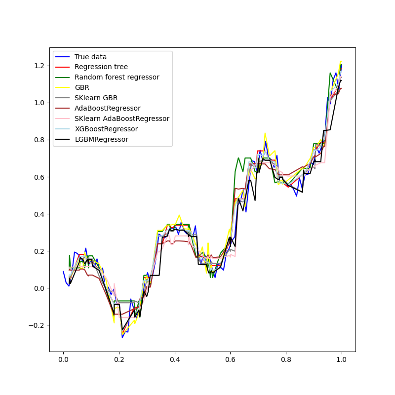
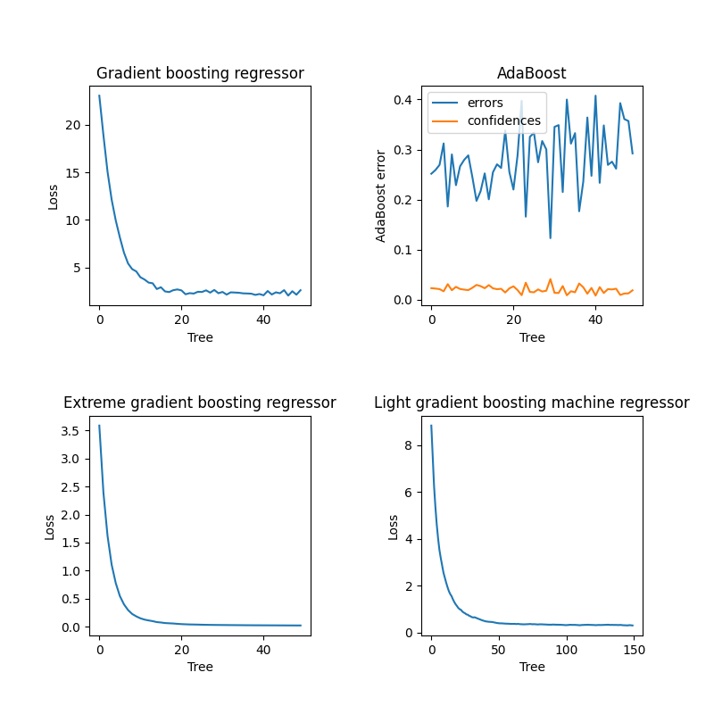
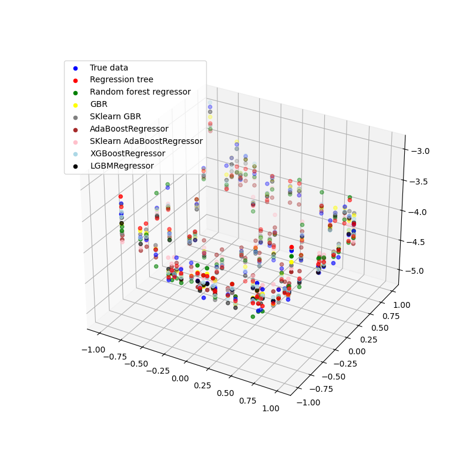
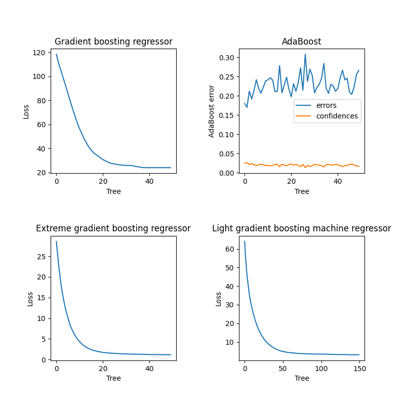

Note
Go to the end to download the full example code.
Regression using tree based models
This script evaluates and compares various regression models, including regression trees, random forest, gradient boosting, AdaBoost, XGBoost, and LGBM, using synthetic datasets.
- 
- 
- 
- 
XGBoost time with 50 weak learners: 1.5154590999882203
LGBM time with 150 weak learners: 1.1558387000113726
import torch
import matplotlib.pyplot as plt
from sklearn.ensemble import GradientBoostingRegressor as gbr, AdaBoostRegressor as abr
from sklearn.tree import DecisionTreeRegressor
from time import perf_counter
from DLL.MachineLearning.SupervisedLearning.Trees import RegressionTree, RandomForestRegressor, GradientBoostingRegressor, AdaBoostRegressor, XGBoostingRegressor, LGBMRegressor
from DLL.Data.Preprocessing import data_split
n = 100
x = torch.linspace(0, 1, n).unsqueeze(-1)
y = 0.2 * torch.sin(20 * x) + x * x + torch.normal(mean=0, std=0.05, size=(n, 1))
y = y.squeeze()
rand_feats = torch.randint_like(x, 2)
x = torch.cat([x, rand_feats], dim=1)
model = RegressionTree()
model.fit(x, y)
x_test, _ = torch.rand((n, 1)).sort(dim=0)
x_test_rand_feats = torch.randint_like(x_test, 2)
x_test = torch.cat([x_test, x_test_rand_feats], dim=1)
y_pred = model.predict(x_test)
model2 = RandomForestRegressor(n_trees=3)
model2.fit(x, y)
y_pred2 = model2.predict(x_test)
model3 = GradientBoostingRegressor(n_trees=50, learning_rate=0.05, loss="absolute", max_depth=3)
history3 = model3.fit(x, y, metrics=["loss"])
y_pred3 = model3.predict(x_test)
model4 = gbr(n_estimators=10, learning_rate=0.5, loss="absolute_error")
model4.fit(x, y.ravel())
y_pred4 = model4.predict(x_test)
loss_adaboost = "exponential"
model5 = AdaBoostRegressor(n_trees=50, loss=loss_adaboost, max_depth=3)
errors5 = model5.fit(x, y)
y_pred5 = model5.predict(x_test)
model6 = abr(estimator=DecisionTreeRegressor(max_depth=3), n_estimators=50, loss=loss_adaboost)
model6.fit(x, y.ravel())
y_pred6 = model6.predict(x_test)
model7 = XGBoostingRegressor(n_trees=50, learning_rate=0.2, loss="huber", max_depth=3, reg_lambda=0.01, gamma=0, huber_delta=5)
start = perf_counter()
history7 = model7.fit(x, y, metrics=["loss"])
print(f"XGBoost time with {model7.n_trees} weak learners: {perf_counter() - start}")
y_pred7 = model7.predict(x_test)
model8 = LGBMRegressor(n_trees=150, learning_rate=0.2, loss="squared", max_depth=3, reg_lambda=0.01, gamma=0, huber_delta=5, large_error_proportion=0.3, small_error_proportion=0.2)
start = perf_counter()
history8 = model8.fit(x, y, metrics=["loss"])
print(f"LGBM time with {model8.n_trees} weak learners: {perf_counter() - start}")
y_pred8 = model8.predict(x_test)
plt.figure(figsize=(8, 8))
plt.plot(x[:, 0].numpy(), y.numpy(), color="Blue", label="True data")
plt.plot(x_test[:, 0].numpy(), y_pred.numpy(), color="Red", label="Regression tree")
plt.plot(x_test[:, 0].numpy(), y_pred2.numpy(), color="Green", label="Random forest regressor")
plt.plot(x_test[:, 0].numpy(), y_pred3.numpy(), color="Yellow", label="GBR")
plt.plot(x_test[:, 0].numpy(), y_pred4, color="gray", label="SKlearn GBR")
plt.plot(x_test[:, 0].numpy(), y_pred5.numpy(), color="brown", label="AdaBoostRegressor")
plt.plot(x_test[:, 0].numpy(), y_pred6, color="pink", label="SKlearn AdaBoostRegressor")
plt.plot(x_test[:, 0].numpy(), y_pred7.numpy(), color="lightblue", label="XGBoostRegressor")
plt.plot(x_test[:, 0].numpy(), y_pred8.numpy(), color="black", label="LGBMRegressor")
plt.legend(loc="upper left")
plt.show()
fig, ax = plt.subplots(2, 2, figsize=(8, 8))
plt.subplots_adjust(hspace=0.5, wspace=0.5)
ax = ax.ravel()
ax[0].plot(history3["loss"])
ax[0].set_ylabel("Loss")
ax[0].set_xlabel("Tree")
ax[0].set_title("Gradient boosting regressor")
ax[1].plot(errors5, label="errors")
ax[1].plot(model5.confidences, label="confidences")
ax[1].set_ylabel("AdaBoost error")
ax[1].set_xlabel("Tree")
ax[1].set_title("AdaBoost")
ax[1].legend()
ax[2].plot(history7["loss"])
ax[2].set_ylabel("Loss")
ax[2].set_xlabel("Tree")
ax[2].set_title("Extreme gradient boosting regressor")
ax[3].plot(history8["loss"])
ax[3].set_ylabel("Loss")
ax[3].set_xlabel("Tree")
ax[3].set_title("Light gradient boosting machine regressor")
plt.show()
n = 20
X, Y = torch.meshgrid(torch.linspace(-1, 1, n, dtype=torch.float32), torch.linspace(-1, 1, n, dtype=torch.float32), indexing="xy")
x = torch.stack((X.flatten(), Y.flatten()), dim=1)
y = X.flatten() ** 2 + Y.flatten() ** 2 + 0.1 * torch.randn(size=Y.flatten().size()) - 5
x_train, y_train, _, _, x_test, y_test = data_split(x, y, train_split=0.8, validation_split=0.0)
model.fit(x_train, y_train)
z1 = model.predict(x_test)
model2.fit(x_train, y_train)
z2 = model2.predict(x_test)
history3 = model3.fit(x_train, y_train)
z3 = model3.predict(x_test)
model4.fit(x_train, y_train)
z4 = model4.predict(x_test)
errors5 = model5.fit(x_train, y_train)
z5 = model5.predict(x_test)
model6.fit(x_train, y_train)
z6 = model6.predict(x_test)
history7 = model7.fit(x_train, y_train)
z7 = model7.predict(x_test)
history8 = model8.fit(x_train, y_train)
z8 = model8.predict(x_test)
fig = plt.figure(figsize=(8, 8))
ax = fig.add_subplot(111, projection='3d')
ax.scatter(x_test[:, 0], x_test[:, 1], y_test, color="Blue", label="True data")
ax.scatter(x_test[:, 0], x_test[:, 1], z1, color="Red", label="Regression tree")
ax.scatter(x_test[:, 0], x_test[:, 1], z2, color="Green", label="Random forest regressor")
ax.scatter(x_test[:, 0], x_test[:, 1], z3, color="Yellow", label="GBR")
ax.scatter(x_test[:, 0], x_test[:, 1], z4, color="gray", label="SKlearn GBR")
ax.scatter(x_test[:, 0], x_test[:, 1], z5, color="brown", label="AdaBoostRegressor")
ax.scatter(x_test[:, 0], x_test[:, 1], z6, color="pink", label="SKlearn AdaBoostRegressor")
ax.scatter(x_test[:, 0], x_test[:, 1], z7, color="lightblue", label="XGBoostRegressor")
ax.scatter(x_test[:, 0], x_test[:, 1], z8, color="black", label="LGBMRegressor")
plt.legend(loc="upper left")
plt.show()
fig, ax = plt.subplots(2, 2, figsize=(8, 8))
plt.subplots_adjust(hspace=0.5, wspace=0.5)
ax = ax.ravel()
ax[0].plot(history3["loss"])
ax[0].set_ylabel("Loss")
ax[0].set_xlabel("Tree")
ax[0].set_title("Gradient boosting regressor")
ax[1].plot(errors5, label="errors")
ax[1].plot(model5.confidences, label="confidences")
ax[1].set_ylabel("AdaBoost error")
ax[1].set_xlabel("Tree")
ax[1].set_title("AdaBoost")
ax[1].legend()
ax[2].plot(history7["loss"])
ax[2].set_ylabel("Loss")
ax[2].set_xlabel("Tree")
ax[2].set_title("Extreme gradient boosting regressor")
ax[3].plot(history8["loss"])
ax[3].set_ylabel("Loss")
ax[3].set_xlabel("Tree")
ax[3].set_title("Light gradient boosting machine regressor")
plt.show()
Total running time of the script: (0 minutes 13.358 seconds)